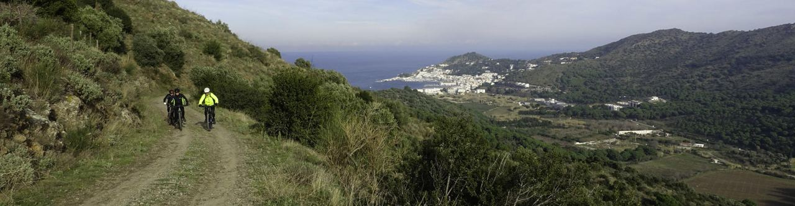

Ruta · Roses
Recorregut directe i intens per la serra de Rodes , però no per això menys interessant. Descobrirem els pobles i els paisatges agrícoles de la banda de ponent de la serra, en contrast amb el…